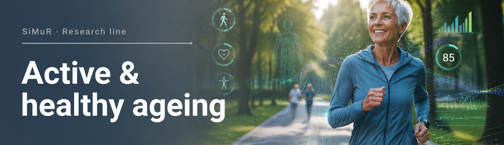
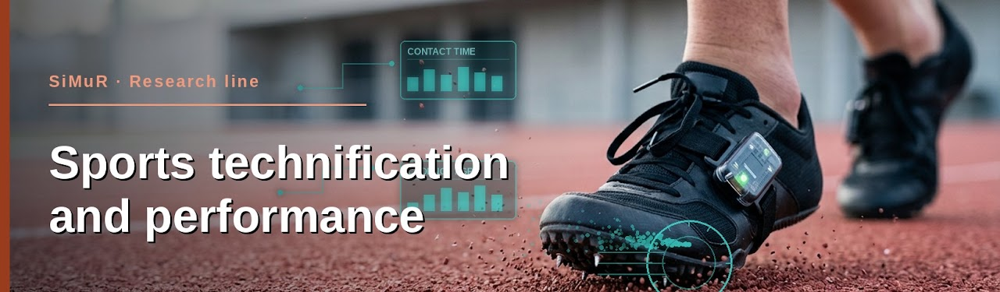
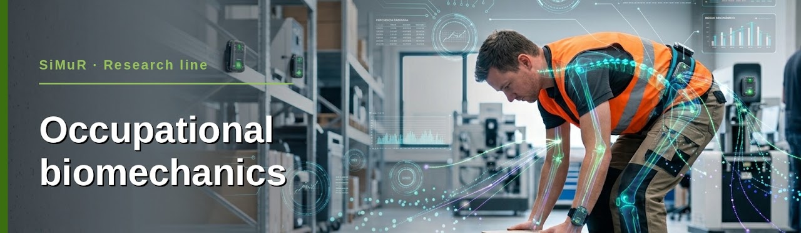

Application domains
These domains channel our applied research, contracts and collaborations. We partner with external actors in the fields in which human movement matters most.

Active and healthy ageing
From continuous, real-world kinematics to validated digital movement outcomes for healthy ageing.
- Monitoring of mobility in older adults in their daily life with wearable sensors.
- Extraction of digital movement biomarkers: fall risk, frailty, sarcopenia, post-surgical recovery.
- Longitudinal, single-person analysis of movement change over time.
- Clinical validation of digital mobility outcomes with clinical partners.
- Personalised mobility assessment linked to intervention and autonomous living.

Sports technification and performance
Wearable instrumentation of athletes for objective, field-based performance assessment.
- On-field capture of high-dynamic sport gestures with wearable sensors.
- Technique characterisation and performance metrics for coaches.
- Kinematic feedback for technification.
- Training load and intensity monitoring.
- Sport-specific movement protocols and metrics.

Occupational biomechanics
Ambulatory quantification of physical exposure in the workplace for injury prevention.
- Upper-limb joint angle measurement in occupational health.
- Ergonomic risk quantification from wearable sensors.
- Long-duration ambulatory monitoring in real work settings.
- Field validation with prevention technicians.
Representative projects
Optimisation of sprint running analysis with inertial sensors. Sponsor: Real Federación Española de Atletismo.
Wearable technology in primary care. Implementation of wearable technology in primary care for personalised exercise medicine. Funding: Instituto de Salud Carlos III, Madrid.
Effects of lifestyle on delaying ageing. EDASTUR consortium. Funding: Principality of Asturias.
Assessment of sports practice. Processing methods for the assessment of sports practice with inertial sensors. Sponsor: Human Analytics.
Posture measurement. Direct measurement models of postures and movements of the lower limbs. Sponsor: FREMAP, mutual insurance company of the Social Security.
SILOP. Spanish national research project on personal localisation with biomechanical models of gait.